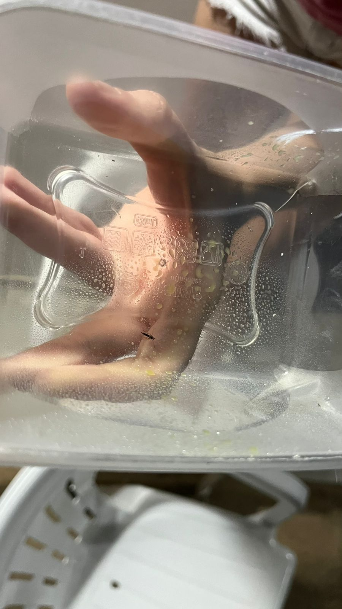
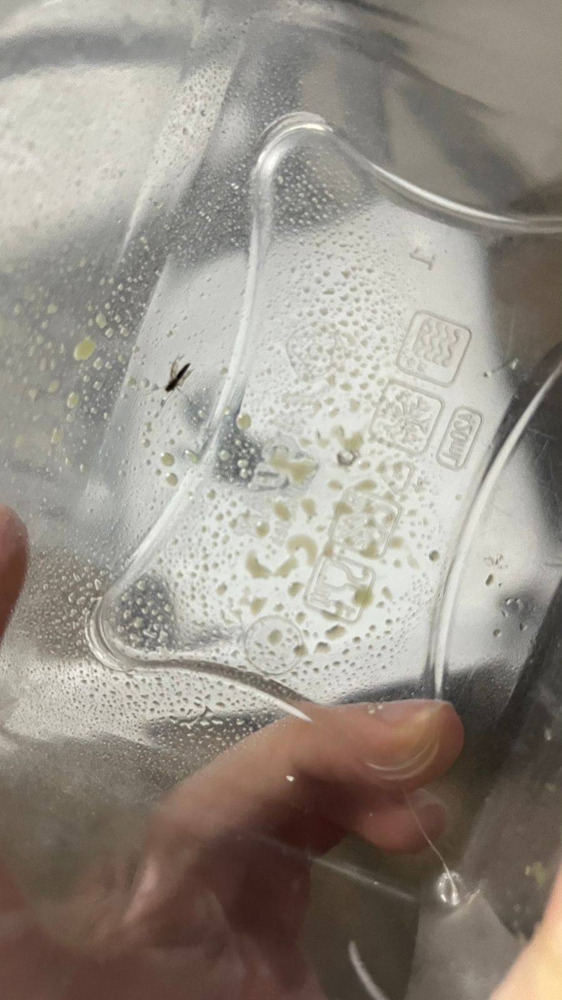

O projeto tem como objetivo desenvolver um spray inseticida natural feito a partir da folha de siriguela (Spondias purpurea) para combater pernilongos. A planta foi escolhida por conter compostos fenólicos, como flavonoides, que possuem propriedades antioxidantes, antimicrobianas e potencialmente inseticidas.
Essa alternativa busca substituir os inseticidas químicos, que causam danos à saúde e ao meio ambiente, oferecendo uma opção mais acessível, natural e segura para o controle desses insetos e contribuindo para a preservação ambiental e a saúde pública.
• Incentivar a população de Rio do Antônio e comunidades próximas a se cuidar em relação a doenças transmissíveis dos pernilongos.
* Comparar a eficácia do inseticida natural com o inseticida químico.
* Propor uma alternativa acessível e respeitando o meio ambiente para o controle de pernilongos na comunidade.
* Investigar as propriedades naturais da folha da siriguela com potencial inseticida.
A pesquisa, de caráter bibliográfico, descritivo e explicativo, foi realizada no município de Rio do Antônio-BA por duas alunas do 1º ano do Colégio Estadual de Tempo Integral de Rio do Antônio.
O tema surgiu em sala de aula e despertou o interesse em compreender o impacto dos pernilongos na comunidade e buscar soluções. As alunas pesquisaram em sites, revistas e artigos científicos, além de consultarem a Secretaria de Saúde Pública para entender melhor o problema.
Também visitaram locais de proliferação dos insetos e, após estudar as propriedades da folha de siriguela, decidiram desenvolver um inseticida natural a partir dessa planta.
Para esse experimento foram utilizados:
2 Limões
3 Dentes de alho
10 Folhas de hortelã
20 Folhas do pé de siriguela
Todos os ingredientes foram colocados no liquidificador e batidos por 3 minutos. Após coar o líquido em uma peneira, transferimos para um borrifador para facilitar a aplicação. O tempo máximo de armazenamento é de 10 dias para garantir a eficácia do produto.
Capturamos um pernilongo e aplicamos o inseticida; após cerca de 30 segundos, o inseto morreu. Com base nesse resultado, pode-se concluir que o spray inseticida à base da folha de siriguela apresenta potencial para matar pernilongos, sendo assim, uma alternativa natural e eficaz para o seu combate.
Conteúdo dos resultados.


O projeto comprovou que a folha de siriguela possui potencial inseticida contra pernilongos. A partir de pesquisas e testes, foi desenvolvida uma fórmula simples, acessível e segura para o meio ambiente e a saúde. A iniciativa destaca a importância de soluções locais baseadas na ciência e na biodiversidade regional, contribuindo para a melhoria da qualidade de vida em Rio do Antônio.
SOZZA, Nicole Fernanda. "Aedes aegypti"; Brasil Escola. [s.d.]. Disponível em: https://brasilescola.uol.com.br/animais/aedes-aegypti.htm. Acesso em 01 de junho de 2025.
ANG-LAY, Giorgia. Ciriguela. Mundo Educação. [s.d.]. Disponível em: https://mundoeducacao.uol.com.br/biologia/ciriguela.htm. Acesso em 30 de maio de 2025.
CNN BRASIL. Por que os pernilongos ‘atacam’ no calor e outras dúvidas sobre os mosquitos. 11 set. 2020. Disponível em: https://www.cnnbrasil.com.br/saude/por-que-os-pernilongos-atacam-no-calor-e-outras-duvidas-sobre-os-mosquitos/. Acesso em 08 de maio de 2025.
INSTITUTO BUTANTAN. Descubra as diferenças entre o mosquito transmissor da dengue e o pernilongo, e o que atrai cada um. 04 abril. 2024. Disponível em: https://butantan.gov.br/noticias/descubra-as-diferencas-entre-o-mosquito-transmissor-da-dengue-e-o-pernilongo-e-o-que-atrai-cada-um. Acesso em 10 de maio de 2025.
RODRIGUES, Gabriel. Mosquito da dengue é o único que tem listras brancas? Especialista responde. O TEMPO, 02 abril. 2024. Disponível em: https://www.otempo.com.br/brasil/mosquito-da-dengue-e-o-unico-que-tem-listras-brancas-especialista-responde-1.3359085. Acesso em 15 de maio de 2025.
TESTONI, Marcelo. Conheça 10 problemas de saúde causados por mosquitos. UOL, 21 fev. 2024. Disponível em: https://www.uol.com.br/vivabem/noticias/redacao/2024/02/21/conheca-10-problemas-de-saude-causados-por-mosquitos.htm. Acesso em 24 de maio de 2025.
Valéria de Souza
Nome do Integrante
Nome do Integrante
Nome do Integrante
Nome do Integrante